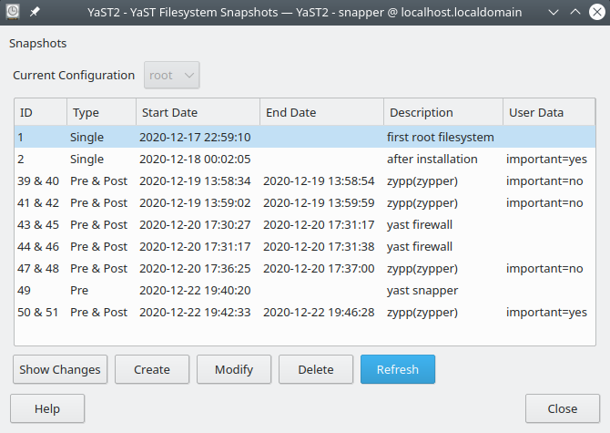
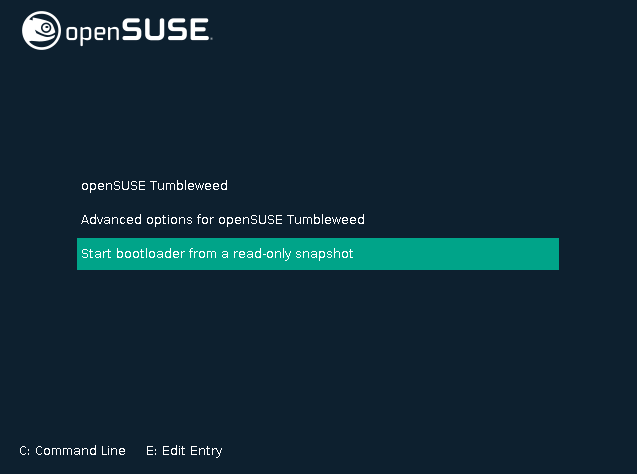
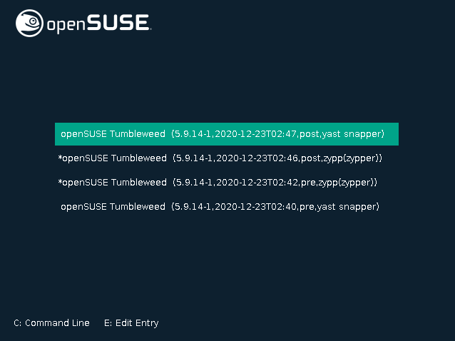

Snapper and Btrfs
Snapper⚓︎
Snapper is a tool for filesystem snapshot management. Snapshots are fully defined state in your system at one point in time, just like a photography is a fully defined moment in a movie, for example. Snapper is able to create, delete and compare snapshots, and to undo changes that occurred between snapshots. It is thus a powerful maintenance tool that allows you to 'cheat' the flow of time: if you run into an outstanding bug you can use Snapper to rollback to a past snapshot, typically one where the bug didn't exist yet. Or if you've already moved to a past snapshot, you are able to switch move to a snapshot that lies in the 'future' relative to it.
Snapper has both a Command Line Interface (CLI) and Graphical Interface. Not all functionality is available through the graphical interface but inexperienced users should find it sufficient for basic tasks.
Snapper is deeply integrated with the Btrfs filesystem, serving as an easy to use helper for the built in functions of Btrfs. The most common Btrfs tasks can be conducted with Snapper, however, there may be instances when it is necessary to interact with Btrfs directly.
Tumbleweed users should note that understanding how to use Snapper is an important step in maintaining a stable, functional system. As a rolling release, Tumbleweed, is subjected to less testing overall and the occasional system breaking update can be installed. Such problems are quickly and easily resolved with Snapper.
Info
Even though Snapper is key to a healthy Tumbleweed experience, it also benefits Leap as it allows you to quickly recover from breakages occuring before login, typically involving the GRUB bootloader or the loading of the kernel with unhealthy parameter values.
Snapper capabilities⚓︎
- Undo system changes made by
zypperand YaST. - Restore files from previous snapshots.
- Do a system rollback by booting from a snapshot.
- Manually create and manage snapshots, within the running system.
Defaults⚓︎
By default, openSUSE Tumbleweed formats your hard drive with the Btrfs filesystem which provides the powerful snapshot capabilities. Snapshots are automatically enabled for the root partition /.
The default snapshot configuration should only be changed by experienced users but it is important to note some default behaviour for new users as well.
-
Snapshots are automatically enabled for the root
/partition if it is larger than 16 Gigabytes. This is to ensure there is enough disk space for the snapshots and important system tasks to occur, which may include moving, writing or deleting files. -
If the root
/partition is smaller than 16 Gigabytes a different kind of snapshot is used, known as "Timeline Snapshots". These snapshots are created every hour. By default only the first snapshot of the last ten days, months, and years are kept. This ensures there are some snapshots for system rollbacks while taking up very minimal disk space. -
The users
/homedirectory is not included in snapshots and should not be relied on as a data backup for personal files. This prevents data loss if a system rollback is conducted. Changes to personal files would also be "undone". -
Directories
/optand/usr/local, where various software and third-party products are installed are not included in snapshots by default. This prevents uninstalling the software if a system rollback is conducted.
Snapshot Types⚓︎
snapper features 3 types of snapshots: Timeline, Installation, and Administration.
- Timeline snapshots are single snapshots, created every hour and old snapshots are automatically deleted. By default, the first snapshot of the last ten days, months, and years are kept. Disabled by default on partitions larger than 16 Gigabytes. The only single snapshots present may be the ones created when openSUSE was installed.
- Installation snapshots are created in pairs (Pre and Post) when packages are installed with YaST or Zypper. Snapshot pairs are marked as important if an important system component, such as the kernel, has been installed. Enabled by default.
- Administration snapshots are created in pairs (Pre and Post) when system administration is performed using YaST. The Pre snapshot is created when a YaST module is started and the Post snapshot is created when the module is closed. Enabled by default.
Note
By default, the last ten important and the last ten regular snapshot pairs are kept. This total encompasses both Installation and Administration snapshot types. Snapshots are automatically deleted when they take up too much space on the disk, but four important and two regular snapshots are always kept.
Configuring Snapper⚓︎
By default Snapper is configured for access with sudo privileges (typically root). This is because under the hood Snapper works hand-in-hand with the Btrfs file system, which is set up for root. Thus in this section we will assume that you will use Snapper accordingly.
To get started you can display all current configurations:
$ sudo snapper list-configs
That would typically return:
Configuration | Subvolume
--------------+------------
root | /
To show this configuration, we is by default the current user's configuration:
$ sudo snapper -c root get-config
returning for example:
-----------------------+-------
ALLOW_GROUPS |
ALLOW_USERS |
BACKGROUND_COMPARISON | yes
EMPTY_PRE_POST_CLEANUP | yes
EMPTY_PRE_POST_MIN_AGE | 1800
FREE_LIMIT | 0.2
FSTYPE | btrfs
NUMBER_CLEANUP | yes
NUMBER_LIMIT | 4
NUMBER_LIMIT_HOURLY | 3
NUMBER_LIMIT_IMPORTANT | 2
NUMBER_MIN_AGE | 1800
QGROUP | 1/0
SPACE_LIMIT | 0.2
SUBVOLUME | /
SYNC_ACL | no
TIMELINE_CLEANUP | yes
TIMELINE_CREATE | no
TIMELINE_LIMIT_DAILY | 10
TIMELINE_LIMIT_HOURLY | 10
TIMELINE_LIMIT_MONTHLY | 10
TIMELINE_LIMIT_WEEKLY | 0
TIMELINE_LIMIT_YEARLY | 10
TIMELINE_MIN_AGE | 1800
Notice the snapshot types discussed in the previous section, but don't take this for reference (you will want superior values for the NUMBER_LIMITS options).
To change a value, do
$ sudo snapper -c root set-config "{option name}={new value}"
as in:
$ sudo snapper -c root set-config "NUMBER_LIMIT=4"
You can create configuration profiles for various purposes. To create a new profile, do
$ sudo snapper -c <subvolume> create-config <subvolume id>
as in:
$ sudo snapper -c foo create-config /foo
You can later remove any config with:
$ sudo snapper -c <subvolume> delete-config <subvolume id>
as in:
$ sudo snapper -c foo delete-config /foot
Creating and Deleting Snapshots⚓︎
You can create snapshots at any time. For example, to create a new snapshot for root (the default consumer of snapshots on openSUSE distributions):
$ sudo snapper -c root create -d "<description>"
or more tersely:
$ sudo snapper create -d "<description>"
Info
Notice the " " surrounding the placeholder. It's a good practice to wrap text strings in this way, so as to make it easier to discern them from other types of values.
It's advisable to use a meaningful description to make it easier to recognize your manually created snapshots later.
To remove a snapshot, regardless of whether it was automatically or manually created, do:
$ sudo snapper -c / delete <snapshot id>
or the terser
$ sudo snapper delete <snapshot id>
Rolling back⚓︎
Identifying Snapshots⚓︎
There are two ways to identify which snapshot you may want to rollback to:
* with the snapper command line utility
* with the YaST utility at YaST > Filesystem Snapshots
Snapper command line:
$ sudo snapper list
Snapper CLI Example
$ sudo snapper list
[sudo] password for root:
# | Type | Pre # | Date | User | Cleanup | Description | UserData
----+--------+-------+---------------------------------+------+---------+-----------------------+--------------
0 | single | | | root | | current |
1* | single | | Thu 17 Dec 2020 10:59:10 PM MST | root | | first root filesystem |
2 | single | | Fri 18 Dec 2020 12:02:05 AM MST | root | number | after installation | important=yes
39 | pre | | Sat 19 Dec 2020 01:58:34 PM MST | root | number | zypp(zypper) | important=no
40 | post | 39 | Sat 19 Dec 2020 01:58:54 PM MST | root | number | | important=no
41 | pre | | Sat 19 Dec 2020 01:59:02 PM MST | root | number | zypp(zypper) | important=no
42 | post | 41 | Sat 19 Dec 2020 01:59:59 PM MST | root | number | | important=no
43 | pre | | Sun 20 Dec 2020 05:30:27 PM MST | root | number | yast firewall |
44 | pre | | Sun 20 Dec 2020 05:31:17 PM MST | root | number | yast firewall |
45 | post | 43 | Sun 20 Dec 2020 05:31:17 PM MST | root | number | |
46 | post | 44 | Sun 20 Dec 2020 05:31:38 PM MST | root | number | |
47 | pre | | Sun 20 Dec 2020 05:36:25 PM MST | root | number | zypp(zypper) | important=no
48 | post | 47 | Sun 20 Dec 2020 05:37:00 PM MST | root | number | | important=no
49 | pre | | Tue 22 Dec 2020 07:40:20 PM MST | root | number | yast snapper |
50 | pre | | Tue 22 Dec 2020 07:42:33 PM MST | root | number | zypp(zypper) | important=yes
51 | post | 50 | Tue 22 Dec 2020 07:46:28 PM MST | root | number | | important=yes

Note
As snapshots are viewed, snapper will create more snapshots, because administrative tasks are being performed.
Moving forward with the assumption there was an issue with the last zypper update, #47 is chosen as the snapshot to recover.
Initiating a rollback⚓︎
Upon identification of a recovery snapshot, reboot openSUSE. At the boot menu, scroll down to, and select, Start bootloader from a read-only snapshot.

On the Read-only Snapshot menu, scroll down to, and select, the desired recovery snapshot. Snapshot #47 is used here as an example. openSUSE will appear to boot as normal.
Tip
There isn't a scroll indicator on the Read-only Snapshot Menu, but it is possible to scroll down to select more options, if available.

Confirming a rollback⚓︎
Once your system has booted, make sure you're satisfied with the current state of your system. Run some tests. Make sure any outstanding bug is not or no longer present. Then if you're satisfied, perform the rollback:
$ sudo snapper rollback
Your system should then be rebooted and the recovered snapshot will be the new default boot option.
In rare cases rolling back with fail as snapper is not able to find the default sub-volume (this may happen if snapper's configuration and the state of your system have diverged in a problematic way, typically if you've made a mistake by accident). To perform a rollack nonetheless you can use the following command:
$ sudo snapper --ambit classic rollback <id>
replacing <id> with the id of the snapshot you wish to roll back to.
Disk Space Management⚓︎
Snapshots don't occupy much space but certain configurations might still want to remove uneeded snapshots to preventing running out of disk space.
Start with a simple list:
$ sudo snapper list
The list features a column mentioning an estimate of the space occupied by each snapshot. You can remove unneeded snapshots with
$ sudo snapper delete <snapshot id>
You will find the value of <snapshot id> in the first column ('#').
Subvolumes Health Check⚓︎
For illustration here is a healthy structure of subvolumes obtained with
$ sudo btrfs subvolume list -p /
ID 256 gen 70064 parent 5 top level 5 path @
ID 257 gen 198577 parent 256 top level 256 path @/var
ID 258 gen 198574 parent 256 top level 256 path @/usr/local
ID 259 gen 198574 parent 256 top level 256 path @/srv
ID 260 gen 198574 parent 256 top level 256 path @/root
ID 261 gen 198574 parent 256 top level 256 path @/opt
ID 262 gen 198577 parent 256 top level 256 path @/home
ID 263 gen 198574 parent 256 top level 256 path @/boot/grub2/x86_64-efi
ID 264 gen 198574 parent 256 top level 256 path @/boot/grub2/i386-pc
ID 265 gen 198573 parent 256 top level 256 path @/.snapshots
ID 1034 gen 198573 parent 265 top level 265 path @/.snapshots/224/snapshot
ID 1141 gen 195869 parent 265 top level 265 path @/.snapshots/325/snapshot
ID 1142 gen 195876 parent 265 top level 265 path @/.snapshots/326/snapshot
ID 1143 gen 196235 parent 265 top level 265 path @/.snapshots/327/snapshot
ID 1144 gen 196320 parent 265 top level 265 path @/.snapshots/328/snapshot
Notice how all snapshots are immediately nested under @/.snapshots/<snapshot id>. If your structure does not match this, you should probably sanitize it. Generally unhealthy structures have the shape:
@/.snapshots/<snapshot id>/<garbage>
where <garbage> is anything else than just snapshot. If you happen to be in this situation consider removing all badly nested snapshots with:
$ sudo btrfs subvolume delete -i <snapshot id> <path>
as in for example:
sudo btrfs subvolume delete -i 1031 /.snapshots/171/snapshot/.snapshots/420/snapshot/.snapshots/1/snapshot.
You might also want to make sure the /.snapshots entry point is correctly registered against fstab:
$ cat /etc/fstab
UUID=22e658f2-1586-4ac2-8aeb-a6862c8c9a25 /.snapshots btrfs subvol=/@/.snapshots 0 0
If this is not the case edit the fstab file accordingly:
$ sudo nano /etc/fstab
pasting on a new line
UUID={your UUID} /.snapshots btrfs subvol=/@/.snapshots 0 0
where the value of your UUID can be determined simply by copying from neighbour lines in the file. Look in particular for lines meeting in the pattern:
UID=22e658f2-1586-4ac2-8aeb-a6862c8c9a25 /var btrfs subvol=/@/var 0 0
UUID=22e658f2-1586-4ac2-8aeb-a6862c8c9a25 /usr/local btrfs subvol=/@/usr/local 0 0
UUID=22e658f2-1586-4ac2-8aeb-a6862c8c9a25 /srv btrfs subvol=/@/srv 0 0
UUID=22e658f2-1586-4ac2-8aeb-a6862c8c9a25 /root btrfs subvol=/@/root 0 0
UUID=22e658f2-1586-4ac2-8aeb-a6862c8c9a25 /opt btrfs subvol=/@/opt 0 0
UUID=22e658f2-1586-4ac2-8aeb-a6862c8c9a25 /home btrfs subvol=/@/home 0 0